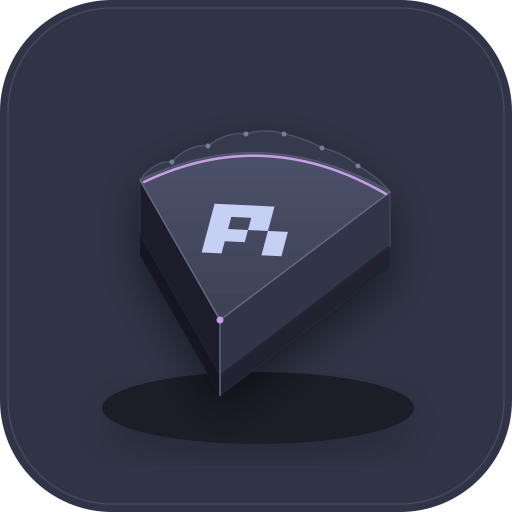
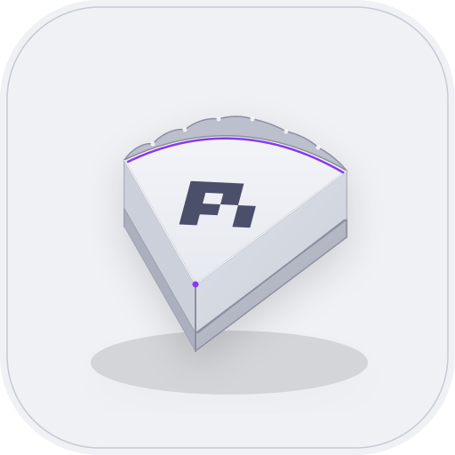
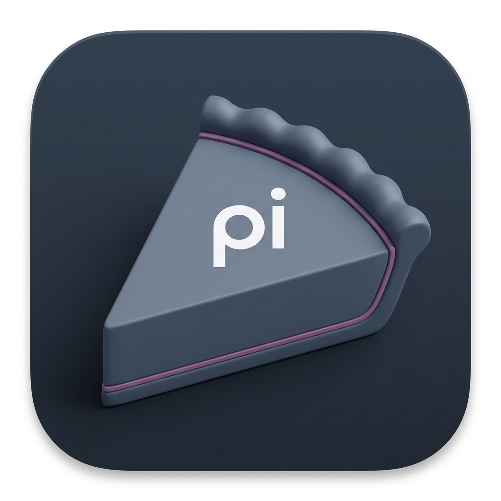

Official stylized 3D "slice of a pie" icon adhering to pure Catppuccin theme color tokens. Features a 1-piece cohesive crust, a dead-centered official Pi coding-agent logo, and zero food/bakery colors or neon glows.


Verifying crisp silhouette, centered glyph recognition, and lack of visual blur across standard desktop display densities.

| Role | Dark Theme (Frappé) | Light Theme (Latte) | Design Function |
|---|---|---|---|
| Squircle Canvas | #303446 (Base) | #eff1f5 (Base) | Matte desktop background tile |
| 1-Piece Crust | #292c3c → #232634 | #ccd0da → #bcc0cc | Darker foundation slab + back fluted rim |
| Pie Filling Top | #414559 (Surface0) | #eff1f5 (Base) | Lighter, smooth top surface facet |
| Official Pi Glyph | #c6d0f5 (Text) | #4c4f69 (Text) | Centered coding agent geometric mark |
| Hairline Seam Accent | #ca9ee6 (Mauve) | #8839ef (Mauve) | Discrete 2.5px inner lip contour (no glow) |